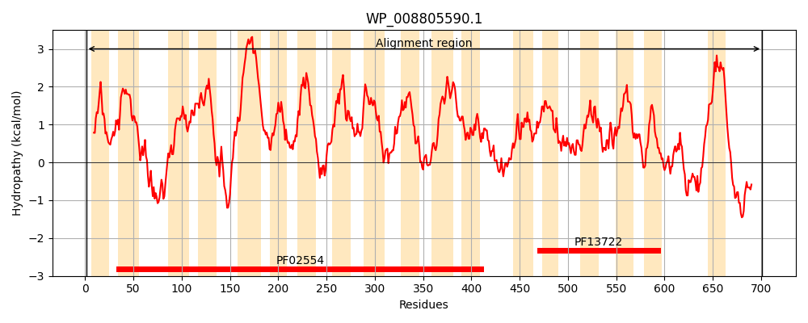
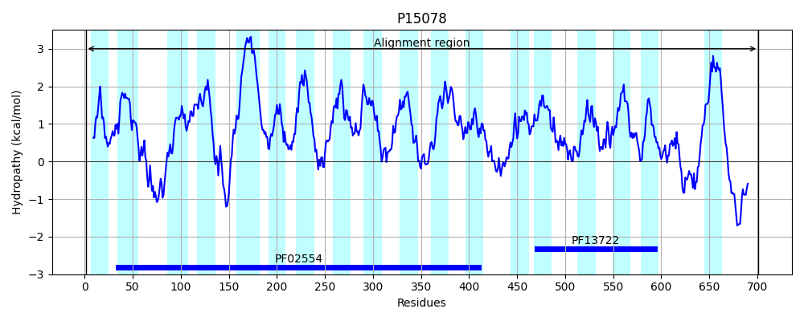
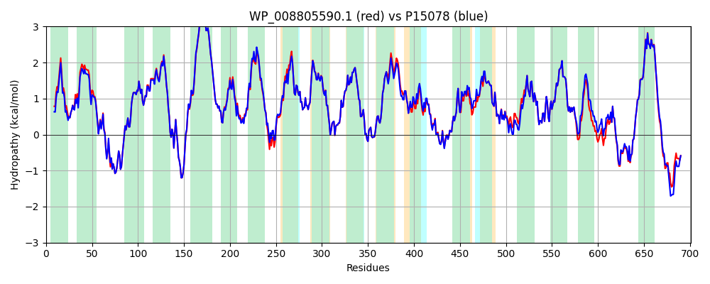

Hit Accession: P15078
Hit TCID: 2.A.114.1.1
Hit Description: gnl|BL_ORD_ID|9152 gnl|TC-DB|P15078|2.A.114.1.1 Carbon starvation protein A - Escherichia coli.
Mach Len: 701
e:0.000000
Query TMS Count : 18
Hit TMS Count: 18
TMS-Overlap Score: 17.650000
Predicted Substrates:CHEBI:15361;pyruvate, CHEBI:25906;peptide
BLAST Alignment:
Score: 3424 , Bit scores: 1323 bits, E-value: 0.0e+00, Alignment length: 701, Percentage identity: 93
Query: 1 MNNSGKYLIWTLLSVIGAFALGYIALNRGEQINALWIVVAAVCVYLIAYRFYGLYIAKTVLGVDPTRMTPAVRHNDGLDYVPTDKKVLFGHHFAAIAGAGPLVGPVLAAQMGYLPGMIWILAGVVLAGAVQDFMVLFVSTRRDGRSLGELVKEEMGPTAGVLALVACFMIMVIILAVLAMIVVKALTHSPWGTYTVAFTIPLAIFMGIYIRYLRPGRIGEVSVIGLVMLVFAIISGGWVAESPTWAPWFDYTGVQLTWILVGYGFVAAVLPVWLLLAPRDYLSTFLKIGTIVGLAIGILIMRPTLTMPALTKFVDGTGPVWSGNLFPFLFITIACGAVSGFHALISSGTTPKMLANEGQACFIGYGGMLMESFVAIMALVAACIIDPGVYFAMNSPMAVLAPAGTTDVVASAAQVVSGWGFSITPDTLHQIASEVGEQSIISRAGGAPTLAVGMAYILHGSLGGLMDVSFWYHFAILFEALFILTAVDAGTRAARFMLQDLLGVISPGLKKTSSLPANLLATALCVLAWGYFLHQGVVDPLGGINTLWPLFGIANQMLAGMALMLCAVVLFKMKRQRYAWVALLPTSWLLICTLTAGWQKSFSPDTKVGFLAIANKFQAMIDSGNIPPQYTESQLAQLVFNNRLDAGLTIFFMIVVVVLALFSIKTALAALKEDKPTAKETPYQAMPADAQTITAQAKRAH 701
MN SGKYL+WT+LSV+GAFALGYIALNRGEQINALWIVVA+VC+YLIAYRFYGLYIAK VL VDPTRMTPAVRHNDGLDYVPTDKKVLFGHHFAAIAGAGPLVGPVLAAQMGYLPGMIW+LAGVVLAGAVQDFMVLFVSTRRDGRSLGELVKEEMGPTAGV+ALVACFMIMVIILAVLAMIVVKALTHSPWGTYTVAFTIPLA+FMGIY+RYLRPGRIGEVSVIGLV L+FAIISGGWVAESPTWAP+FD+TGVQLTW+LVGYGFVAAVLPVWLLLAPRDYLSTFLKIGTIVGLA+GILIMRPTLTMPALTKFVDGTGPVW+GNLFPFLFITIACGAVSGFHALISSGTTPKMLANEGQACFIGYGGMLMESFVAIMALV+ACIIDPGVYFAMNSPMAVLAPAGT DVVASAAQVVS WGFSITPDTL+QIASEVGEQSIISRAGGAPTLAVGMAYILHG+LGG+MDV+FWYHFAILFEALFILTAVDAGTRAARFMLQDLLGV+SPGLK+T SLPANLLATALCVLAWGYFLHQGVVDPLGGINTLWPLFGIANQMLAGMALMLCAVVLFKMKRQRYAWVAL+PT+WLLICTLTAGWQK+FSPD KVGFLAIANKFQAMIDSGNIP QYTESQLAQLVFNNRLDAGLTIFFM+VVVVLALFSIKTALAALK+ KPTAKETPY+ MP + + I AQAK AH
Sbjct: 1 MNKSGKYLVWTVLSVMGAFALGYIALNRGEQINALWIVVASVCIYLIAYRFYGLYIAKNVLAVDPTRMTPAVRHNDGLDYVPTDKKVLFGHHFAAIAGAGPLVGPVLAAQMGYLPGMIWLLAGVVLAGAVQDFMVLFVSTRRDGRSLGELVKEEMGPTAGVIALVACFMIMVIILAVLAMIVVKALTHSPWGTYTVAFTIPLALFMGIYLRYLRPGRIGEVSVIGLVFLIFAIISGGWVAESPTWAPYFDFTGVQLTWMLVGYGFVAAVLPVWLLLAPRDYLSTFLKIGTIVGLAVGILIMRPTLTMPALTKFVDGTGPVWTGNLFPFLFITIACGAVSGFHALISSGTTPKMLANEGQACFIGYGGMLMESFVAIMALVSACIIDPGVYFAMNSPMAVLAPAGTADVVASAAQVVSSWGFSITPDTLNQIASEVGEQSIISRAGGAPTLAVGMAYILHGALGGMMDVAFWYHFAILFEALFILTAVDAGTRAARFMLQDLLGVVSPGLKRTDSLPANLLATALCVLAWGYFLHQGVVDPLGGINTLWPLFGIANQMLAGMALMLCAVVLFKMKRQRYAWVALVPTAWLLICTLTAGWQKAFSPDAKVGFLAIANKFQAMIDSGNIPSQYTESQLAQLVFNNRLDAGLTIFFMVVVVVLALFSIKTALAALKDPKPTAKETPYEPMPENVEEIVAQAKGAH 701 | Protein Hydropathy Plots: |
|---|
|  |  |
Pairwise Alignment-Hydropathy Plot:
|
|---|
|  |